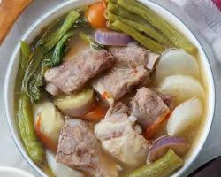

INGREDIENTS
- 1 kg pork belly, cut into bite-sized pieces (or other protein like shrimp, fish, or chicken)
- 1 tablespoon vegetable oil
- 1 onion, chopped
- 4 cloves garlic, minced
- 1 piece ginger, thinly sliced (optional)
- 1 (15oz) block tamarind paste, diluted in 1 liter water
- 1 large tomato, quartered
- 4 cups water
- 1 bunch kangkong (water spinach)
- 1 bunch string beans, trimmed and cut into 2-inch pieces
- 1 bunch okra, trimmed and cut into 2-inch pieces
- 1 eggplant, halved and sliced
- Salt and pepper to taste
- Optional: chilies for spice
|

|
PROCEDURE
- In a large pot, heat oil over medium heat. Brown the pork pieces until golden brown.
- Add onion, garlic, and ginger (if using), cook until softened.
- Pour in the diluted tamarind paste and water. Bring to a boil, then reduce heat and simmer for 15 minutes.
- Add the tomato and simmer for another 5 minutes.
- Add the kangkong, string beans, okra, and eggplant. Simmer for 5-7 minutes, or until vegetables are tender-crisp.
- Season with salt and pepper to taste.
- Add chilies (optional) for a spicy kick.
- Serve hot with rice.
|